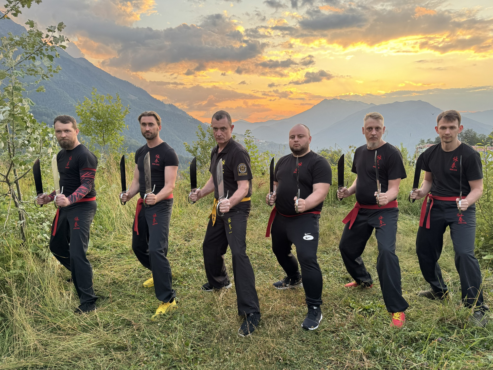

Итоги Большого тренировочного лагеря в Сочи: 7 дней интенсивного Вин Чун для взрослых и детей под руководством СиФу Анатолия Белощина
С 4 по 11 июля 2025 года в Олимпийской деревне «Роза Хутор» успешно прошел масштабный летний лагерь Федерации Вин Чун России и Международной Организации Вин Чун (IWCO). Участники от 6 лет и старше погрузились в интенсивный тренировочный процесс, совмещенный с отдыхом в уникальном горном заповеднике.
Уникальный формат для всей семьи
В этом году лагерь впервые был организован в обновленном формате, объединив под эгидой Федерации Вин Чун России практикующих всех школ и направлений. Отдельная детская секция, работавшая под руководством инструктора Цовинар Маркарян, позволила семьям заниматься Вин Чун вместе, делая искусство доступным для всех возрастов. Программа была выстроена так, чтобы каждый участник мог поднять свой уровень мастерства, укрепить здоровье и зарядиться энергией на весь год.
Интенсивная программа: от основ к тонкостям работы с оружием
За семь дней было проведено 18 насыщенных тренировок, каждая из которых была посвящена отработке конкретных технических блоков искусства Вин Чун. Первый день участники посвятили отработке техник «Гуо Сао», подсечек и бросков, закладывая прочную основу для последующих занятий. Второй и третий день погрузили практикующих в сложный и эффективный мир работы с оружием. Тренировки были сфокусированы на технике ножей «Бат Чам Дао» и работе с шестом «Муй Фа Джонг». Четвертый день был посвящен тонкостям исполнения формы «Чам Киу» и применению техник «Биу Дзе». Особое внимание уделили отработке блоков и срезов ногами. Заключительные дни лагеря, с пятого по седьмой, первоначально планировались для отработки «Чи Сао», однако по запросу участников были посвящены углубленной парной работе с мечами Дао. Детская группа в это время осваивала технику парных мечей и перешла к учебным поединкам без оружия.
Мастера и наставники
Тренировки и семинары проводила команда ведущих специалистов под общим руководством СиФу Анатолия Белощина, Президента Федерации Вин Чун России и Вице-Президента IWCO. В работе со взрослыми группами также участвовали старшие инструкторы Федерации Александр Павлов-Русинов и Осман Динаев. СиФу Анатолий Белощин поделился своими впечатлениями: «Для нас было ключевым создать среду, где и начинающий, и опытный практик сможет найти вызов для себя. Решение посвятить финальные дни парной работе с Дао — это яркий пример гибкости подхода, отвечающего запросам нашего сообщества. Мы видим, как Вин Чун в России выходит на новый уровень, становясь настоящим семейным искусством, объединяющим поколения». Участники лагеря не только значительно повысили свой технический уровень, но и получили уникальный опыт погружения в дисциплину, тренируясь в атмосфере олимпийского наследия. Совмещение интенсивной практики, горного воздуха и общения с единомышленниками делает такие выездные мероприятия мощным инструментом для личного роста и укрепления духа сообщества Вин Чун в России. Хотите погрузиться в мир Вин Чун и не пропустить следующие события? Следите за анонсами на нашем сайте и записывайтесь на тренировки в вашем городе, чтобы стать частью нашей команды!